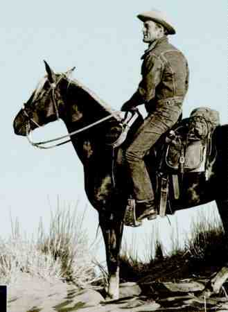

Lonely Are The Brave A-, A- US/1962/B&W/Widescreen 2.4:1 /Mono/107 minutes/Directed by David Miller/Starring Kirk Douglas, Walter Matthau/MCA/41 Chaps/Theatrical Trailer/CLV/$34.98 I looked at my watch once during Lonely are the Brave. When side one finished I could not understand why MCA had such a small portion of the movie on the first side of the disc, but to my shock I noted that nearly an hour had passed. The 107 minute film seemed incredibly short from beginning to end so tautly was the screenplay scripted and the reigns of direction held. It is wonderful to watch Kirk Douglas at his craft in Lonely are the Brave. This is one of those parts that the artist can sink his teeth into, and Douglas has never been accused of having too few of those. As a contemporary cowpoke drifter, he is always utterly convincing. When he talks to his horse, it seems the most natural of events, a man alone with his horse in the wilderness. The opening scene tells all and from then its only for the inevitable to play itself out. In the background  a distinctly building buzz as the camera pans in a graceful arc to take in the landscape of the desert winding up its sweep on a close-up of a recumbent cowboy. Douglas, playing the charismatic drifter Jack Burns, dragging on a cigarette looks up toward the sound dominating the sky and watches the long plumes trail after three streaking jet planes. So this is the way it is to be: the ineluctable clash of two ways of life, coalesced into these two images of different times meeting at the crossroads of the horizon.The film is anchored by three major sequences, each handled beautifully: a bar room brawl, a jail "break-in," and the escape and pursuit by a posse. Burns' brawl with a one-armed man is reminiscent of the fabulous fracas in Bad Day at Black Rock with a role reversal. The timing involved in this sequence is brilliant. Nothing is wasted. The brawl is Burns' way of breaking into jail to see his closest friend. In prison, he tries to convince his friend to break with him, to the old way of life, to youth, to a freedom from social responsibility. But the way through the sage brush and brambles is Jack's way. The pursuit, again extremely compact, is magnificent. It moves at a breathless pace built by unrelenting tension. The sweeping widescreen black and white photography is lovely. The stark expanses of barren landscape stretching to the horizon beckon as a call to Burns. Director David Miller, a veteran journeyman director acquits himself with honors. Miller elicits a controlled performance from Douglas that, however understated(yes, understated)ranks with the actor's finest work. Gena Rowlands adds a touch of femininity as the wife of Burns' buddy. Walter Matthau is slatternly and casual as the sheriff and George Kennedy is hissing brutality itself as one of the deputies. This is a wonderful transfer, as clear as the desert sky and unmarred by any pressing related artifacts. Blacks are rich and the full range of grays are handles in subtle tones. The image is extremely sharp, yet the inherent difficulty in projecting widescreen black and white images is not apparent. The rendering of the fine score by prolific screen composer Jerry Goldsmith is excellent. The back jacket is peppered with interesting quotes from Douglas about the production and to the overall enjoyment. Lonely are the Brave is a must for your collection! |